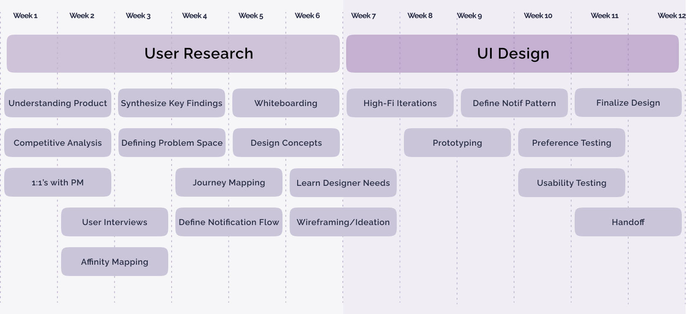

Amazon Fintech Notification Design
From anxious platform monitoring to confident action - redesigning notifications for thousands of users across Amazon's trillion-dollar fintech ecosystem.

Summary and Impact
I worked as a UX Design Intern on an internal financial automation platform for manual journal entries, designing notification experiences used by accounting and finance teams across Amazon. As the design intern on a team processing trillions in transactions, I collaborated closely with PMs, engineers, and finance users. While my work is under NDA, my main contributions included:
- Designing the platform's notification system and workflows, contributing to ~500K hours saved annually across Amazon's internal fintech teams.
- Creating a filtering framework that replaced fragmented search patterns across intenal fintech tools.
- Establishing a standardized notification framework that were adopted across 200+ Amazon fintech tools.
Project Timeline
Here's my project timeline and key milestones over the summer.

My Main Takeaways
User mental models drive great design. The best designs work with how people already think, not against them. Understanding how accountants naturally track responsibilities and deadlines helped me design notification patterns that fit their workflows instead of forcing new mental models.
Ownership transforms ambiguity into progress. When stakeholders shifted or priorities changed, taking initiative to clarify requirements, find new contacts, and expand research kept the project moving instead of waiting for direction.
Design is about balancing trade-offs. Impactful design balances user needs and constraints. I've learned that advocating for users while understanding real-world limitations wroking with engineering and PM teams is what makes design truly impactful.